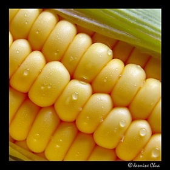
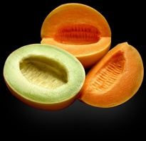

吃素源于慈悲戒杀
未戒荤者不可谤佛自欺
冯冯
迷失在未来 / 誊录
世人大多数不认识素食的好处，只认为肉食才是最佳营养，与最大的口腹享受；殊不知肉食是最大的致病之源。
产肉最多的国家，美国、澳洲、加拿大、纽西兰；其社会以吃烤牛羊肉为风尚。这些国家的癌症与心脏病、高血压、脑充血、胆结石、肾脏结石、血管硬化……等的百分比，大大的高于那些肉食较少的国家。其中尤以纽西兰人的癌症与心脏病等症，死亡率为全球之冠；因为纽西兰盛产肥羊，羊肉太便宜了！
澳洲与加拿大盛产肉牛，几乎家家户户天天都吃烤牛肉。加拿大的鸡肉，价廉物美，油炸鸡腿是最便宜的，一块多钱，就可买到一盒。这两个国家的心脏病与癌症患者比率，仅次于纽西兰。
美国社会贫富悬殊，吃肉的纪录，略逊于纽、澳、加三国。但是，美国人吃肉，比世界其他国家仍是多得太多。心脏病成为美国人的头号杀手，癌症居第二位──其中又以肝癌、肺癌、大肠癌、胃癌、血癌为最多。这些可怕的疾病，大多数是源起过量的肉食与烟酒所致。
东方最富足的社会，是日本与台湾。日本人爱吃生鱼片、活虾与烤肉。因此，心脏病与肠胃癌的比率，也成为亚洲之冠。台湾社会重视饮食享受，肉类与海鲜的消耗量，可能还远超过日本人。心脏病、癌症、高血压……等疾病的比率，也随着社会的富庶而直线上升。
贫穷的中国大陆，饥饿多年的农民，正在拼命宰吃饲养的猪鸡。共干一向剥削人民，榨取人民的生产成果，向来就是大吃大喝；高干更是吃得脑满肠肥。根据联合国资料，大陆的心脏病与癌症患病率，亦在不断急剧上升，形成很奇怪的的对照：大陆上最贫穷的农村人民，以患喉癌者为多，因为他们没有鲜肉吃，天天只吃腌肉、腌菜。有较多肉吃的地区，则患肠癌者为多，因为他们舍不得抛弃猪油、鸭油、鸡油，而拿来做炒菜之用。这些动物油，在高温煎炸之后，产生致癌物质，引起肠癌。河南农村患喉癌者多，新疆患心脏病与肠癌、高血压者多，这就是饮食与癌症有密切关系的最好例子。
无论是欧美或亚洲国家，暴饮暴食都是通病。几乎人人都拼命贪馋地享受太多的肉食，把自己加速地带上疾病死亡之途而不自知。大鱼大肉、山珍海味、烤鸡烤鸭，佐以佳酿，这些人生享受，其实是在自杀。
太多的胆固醇动物脂肪、动物蛋白质，会引起高血压、心脏病、脑充血、胆结石，与各种癌症，已经是现代医学证实了的事实。饮太多酒会引起肝癌，抽太多烟引起肺癌，也是不争的事实。现代医学家谆谆苦劝世人，但是世人却很少听信。有些人说：“吃肉死，不吃肉也死，反正都会死，何不享受个够呢？”
乍听好像有理，细思则不然。为什么呢？肉食者大多数都活得比素食者短命些，这是人人皆知的事实。加拿大与美国，虽由于医学发达，使一般人寿命长于落后国家。但是，最多也不过是六七十岁，很少有一百二三十岁的。可是巴基斯坦与帕米尔交界的万尺高山的贫苦罕萨民族、南美洲安地斯山脉高山上的贫穷人士、苏联乌拉山派上的贫苦山民，平均寿命都在一百岁以上，村中最年轻的老人，是一百一十多岁，还与祖父一代同住。这些贫苦的山民，并非狩猎民族，而是农耕民族，平时吃的是玉蜀黍与野菜之类；养了羊，是为了喝羊奶，并不舍得杀吃羊儿的。他们一年到头在山上劳动耕种，没有肉吃，没有享受，竟成为著名的长寿民族！
 不错，人是都会死的！但是健康地活得长久些，岂不比患了癌症或心脏病之类，痛苦地挣扎好些吗？人活得长久些，多做些对国家社会有贡献的事功，不是更好吗？为什么要明知故犯地拼命吃肉享受，而赶着上鬼门关去？
佛教主张必须吃素，最基本的有两个理由：
第一，吃素的最主要出发点是戒杀生。学佛首先要守五戒的第一戒“戒杀生”。必须学习慈悲，非但不杀同类，亦不可杀害任何生命。所谓戒杀生，严格来说，还要不妄伤“无情生”。很不幸地，色身要靠食物来维持生命，只好吃被视为“无情生”的植物，这是很不得已的。只要做到不杀“有情生”的动物，不吃动物，那就算很好了。
佛教不吃荤不吃肉类，是寓慈悲于“杀生”，这是很重要的首戒；假如人人都不吃鱼，不吃肉，就没有人屠杀动物，动物便能各遂其生。也没有杀生的因果──冤冤相报的循环，自然也再没有战争屠杀。那么世界不是太平安乐多了吗？佛教的吃素，实在是有积极的消除恶因作用的，不能视之为消极！
佛经说：“同体大悲。”就是说动物与人类是同体同源的。楞严经说：“食肉之人，死堕恶道，受无量苦。”就是指出食肉的恶因与所受的恶果。世人如不能接受来世的轮回受苦之说，至少也应该接受今生吃肉，会得癌症及心脏病的现世因果报应罢（请参看拙作“太空科学核子物理学与佛理的印证”一书第廿一篇）！
第二大理由：是为了保健，预防疾病，而已健康的色身去修心养性，方可容易修行。这些都不用再多说明，天华公司印行的“新编素食·健康·长寿”一书内，已有很详尽的分析。此书的第一章第一节是拙作，首先揭示“守戒与吃素保健长寿”，第二节指出肉食与癌症的关系，第三节指出战胜癌症的方法。第三章详述素食与血质的关系、植物纤维的功能。第四章阐述素食的营养。其中第二节详述植物性蛋白质的价值为什么高于动物性蛋白质，并表列两者的比较。这一章的第三节，详列各种植物菜蔬的营养成分，这和第一章第三节所列“含钾丰富的食物”与“含钾少的食物”两表，是互相呼应的。我们参考这些最新的美国卫生署资料来调配食物，改为全部素食，身体一定会一天比一天将健康的。
这本书的第五章，列表素食对妇幼的好处；第六章略述素食的现世利益；第七章简述食肉的因果报应；第八章引述西方社会的戒杀护生；都是很难得的参考资料。
当然，这本书的搜集资料，还是不够完整。但若以一百五十余页的篇幅而论，就算是“麻雀虽小五脏俱全”了。这是我所见过的以最纯正的佛教思想而提倡素食的小册。这书内，甚至于没有主张可以用渐进方式来戒荤。本来，要戒荤，就应下大决心，立刻全部戒绝肉食，才是最好的方法！“渐戒”只是不得已的方式，并非正统。
涅磐经内载，迦叶问佛：“何故先听食三种净肉，乃至九种净肉？”佛答以：“是因事渐次而制，常知既是现断肉义！”
由此可知，佛陀当时只是不得已权宜之法，勉强准许徒众渐次戒肉，并非真正准许他们永不戒荤。佛语第二句就是叫人立刻断除吃肉的。
现在颇有些人在倡言：“信佛可以不必吃素，可以吃肉。”有些教派，也倡言吃肉不妨修行。甚至在东南亚的每次佛教大会，也分别备有肉食与素食两种供养。他们的理由，都是说佛陀不禁吃“三净肉”──非自己亲手杀的动物之肉，就可以吃──这是曲解佛陀本意的。佛陀最重视慈悲戒杀生，岂会准许永久吃肉？
又有很多人，包括一些佛学理论，和某些宗派人士在内，认为学佛无须持素的理由主要有四端：
 第（一）、佛陀与弟子当日在印度行道宏法，到处托钵化缘，人家布施什么就吃什么。若有施主布施肉食，佛陀亦照吃不误。
第（一）、佛陀与弟子当日在印度行道宏法，到处托钵化缘，人家布施什么就吃什么。若有施主布施肉食，佛陀亦照吃不误。
第（二）、尼泊尔、西藏、锡金等山地，不能耕种，没有蔬菜等农作物，只有牛羊，若不吃牛羊鸡鸭雁鹅，就无以维持生活。所以，那一带的佛教密宗信徒，可以吃肉吃荤，这是环境所迫。
第（三）、天山南北路与巴基斯坦的民族，都是游牧民族，没有蔬菜吃，非吃牛羊牲口不可。古代的西域诸国，很多是佛教国家，他们都吃肉。
第（四）、吃不是自己亲手杀的动物，是没有恶业因果的。杀死牲口动物的人，才有恶业因果，吃肉的人，只不过是吃没有生命的尸体，没有恶业罪过。
非佛教人士，有很多人说：人若不吃动物，将来动物就会繁殖太多，占取人类生存空间，甚至于吃人类，所以人类必须吃肉，也必须保护狮子、老虎、老鹰、鳄鱼之类的猛兽，来控制动物的数目。
这些，在我看来，都是似是而非的道理，我称之为邪见与谬论！
让我们逐项分析一下：
（一）佛陀是以大慈悲之心来建立戒约。首戒杀生，佛陀认为众生平等，人与各种动物同根同源，是兄弟姊妹，同体大悲。因此，衪教训世人必须吃素勿吃肉，作为不杀生及消弭他人杀生的一种方法。佛陀自己首先力行茹素，以身作则，怎会率先破戒去吃任何人供养布施的肉类？
楞严经中记载：“未来之世，有愚痴人，妄说毗尼，坏乱正法，诽谤于我，言听食肉，亦自曾食。”
佛陀早已如此预言，未来必会有人妄语，诽谤衪准许佛徒众吃肉，而且说佛衪自己也曾吃肉！不出佛陀所预料，今世确有很多人，包括一些仍然吃肉，不肯吃素的“佛学学者”在内，诬谤佛陀曾经准许吃肉，及佛自己亦吃肉。这种诽谤，是罪大恶极的！不可原谅的！
以佛陀的慈悲，他固然不会拒绝任何人的供养。但是，佛陀断不会接受肉食供养，这是可以断言的。他必会予以婉拒及教导供养人，不得以肉供养。
其次，佛陀在世传法垂五十年，全印度谁不知道佛陀的戒律首重慈悲戒杀？谁不知道佛陀吃素？凡是布施供养食物的人，无疑地，绝大多数是信佛的人，无疑地，绝大多数是信佛的人，怎会把肉食布施给佛陀？怎会让佛陀吃肉？
设或有外教或邪人，故意把肉混入供养，以陷害佛陀，佛陀怎会不察觉而吃了呢？别说佛陀有那么伟大高超的神通了，就是毫无神通的凡夫冯冯，在外面行走，任何人或餐馆供应的菜馔之中，若有用猪油炒煮的，我亦立刻嗅着腥臭气味而拒予接受。一介凡夫俗子如冯冯，尚可分辨荤素，难道佛陀反而不能吗？若有人硬是认为佛陀不察荤素而吃了荤肉所煮的素菜，这人的思想未免太简单了。
 再其次，印度人大多数都很穷苦，哪有许多肉食布施？印度人不杀牛，自然不会用牛肉去布施。猪、鸡这些，都是印度一般人民难得吃到的肉类，根本不可能布施。有钱的印度人，王公贵人，受过一些教育，都听的懂佛陀的教训，断不会用肉类来布施供养佛陀的。
再其次，印度人大多数都很穷苦，哪有许多肉食布施？印度人不杀牛，自然不会用牛肉去布施。猪、鸡这些，都是印度一般人民难得吃到的肉类，根本不可能布施。有钱的印度人，王公贵人，受过一些教育，都听的懂佛陀的教训，断不会用肉类来布施供养佛陀的。
再分析下去，婆罗门教徒亦是主张吃素的，他们承认佛陀，尊敬佛陀为婆罗门大神的化身，他们怎会将肉食布施给佛陀？吃肉的伊斯兰教，彼时尚未出现，谁来把肉食供养佛陀？佛陀宏法所至各地，都是农业社会地区，很少接触游牧民族的肉食社会，谁来对他供养肉食？
这样，我们不难知道，佛陀根本就不会破戒吃肉，也不会准许吃肉，更没有可能接受肉食供养！至于那些学者妄言佛陀亦吃肉，不过是他们制造出来的吃肉藉口罢了。“连佛陀都吃肉，我们为什么不可以吃肉？”这是他们自欺欺人，似是而非的妄语而已！我真不知道他们学佛学到哪里去了？连基本第一戒都不能守，佛学理论讲得天花乱坠，又有什么了不起呢？我从来没听说吃肉可以成佛的，如果有，那可真是千古奇闻！何必学佛？索性大家杀生吃肉，就都成佛了？有这道理吗？可有吃肉的佛菩萨？
（二）尼泊尔、西藏、不丹、锡金一代的密教喇嘛，实际上，并非人人吃肉的。嘉瓦仁波切就是终生持素的伟大喇嘛，他来美加之时，在电视新闻上坚持学佛必须先学慈悲先持素！这位佛教密宗领袖持素，他的左右弟子也都是吃素的。没有什么理由让任何人说：“密宗就可以不必吃素，藏密就可吃肉。”
不错，尼泊尔、西藏等地区，山区寒冷，种不出蔬菜。该地区民族自古以来均以肉食为主，青粿及干粮为副。但是帕米尔群峰的民族，都不吃肉；他们都吃素，食物以玉蜀黍、青粿、小麦、高粱、野菜、高山果菜类等为主食。他们饲养的羊只数目很少，只留作取奶饮用。这些民族，所居住的高山，比西藏更高、更寒冷，更不宜耕种，怎么人家就能种出农作物来吃，而西藏人就不能种植呢？乌拉山脉的村人，终年在零下数十度的冰雪中生活，怎么人家就能吃素呢？南美洲安地斯山脉上的古代印加族遗民、巴西亚马逊河原始森林内的玛奇克族人，为什么亦能吃素？
我推论西藏人的不吃素，是由于他们传统的生活习惯，并非真正没有吃素的条件。嘉瓦仁波切及其弟子可以吃素，为什么有些藏密教派××法王之流就不能吃素，非要天天吃烤牛羊肉与喝酒不可？
若说西藏无青菜，不得已而吃肉；那么，现在已经离开了西藏的许多藏密教徒，到了台湾、美、加、瑞士，有些人已经改为吃素了，但是大多数仍然吃肉喝酒，难道台湾、美、加、欧洲也没有蔬菜供应吗？
从美国的电视新闻介绍，可见到西藏的主要地区，在联合国农教指导之下，渐渐开辟，成功地种出了肥美巨大的蔬菜与水果，卷心菜一颗重达三十磅，不亚于山东大白菜。由此可见，西藏以前的农业落后，是人为因素，非干天时。藏人一向不知农耕，只知畜牧，遂养成肉食传统，如此而已。数千来的传统，一时难改；以致连密勒日巴那么伟大的密教大师，当年也不免循从风俗而饮酒食肉，这恐怕不是他的本意吧（详见密勒日巴大师全集）。
显密同是佛陀所教，是真理的一体两面。我对宗教极其尊敬，我这里完全不是抨击密宗，只是很客观地分析密宗为什么有人吃素，有人不吃素。本文的分析无妨于我对密教各大祖师的崇敬。我认为他们若吃肉，亦是不得已的权宜行为，并非他们主张吃肉。密教出于大迦叶拈花微笑，亦即是出于佛陀以心传心，断不会违反佛陀慈悲或杀生及吃素的宗旨。千百年来，密教为了宏法，而与西藏民族生活方式妥协，相信亦是很不得已的。而且也是一种“渐禁”──分期戒肉戒杀。不幸地，传到今世，很多学密的人，未能了解密教本来的渐禁真意。他们吃肉成为习惯，又不探求密教秉承佛陀“渐禁”之苦心，竟妄自倡言佛陀亦食肉，学佛可以食肉，这是违反佛教原意的！这些人，最好先把密宗的经典多深入研究一下再说罢。否则，就向嘉瓦仁波切十四世学习，他在印度居住，寺院规矩一如在拉萨之时，他与徒众全都是守戒吃素的 (注)。就是后藏班禅喇嘛，至今也仍是吃素的。可见世人说：“密宗不必吃素。”此语是对密宗的太大误解，有些人倡导学密吃肉可以成佛之说，真乃误导众生了！
总而言之，真的密宗亦是主张戒杀吃素的；若有反其道而行，爱吃肉喝酒，那是个人修持上的问题，或者是“渐进”未臻戒肉阶段，吃肉断非宗教原意！显教的信徒，亦不应以少数吃肉的密宗人士，而指斥密宗全体都吃肉不守戒，那是对密教不公平的。据我所知，藏密的大德很多是吃素戒杀的，与显宗并无分别，同样都是遵守佛戒的。
（三）天山南北路，虽多大沙漠，但是绿洲地区，盛产蔬菜水果，比内地出产的更多。古代的西域国家，是信仰佛教的，大多数人都崇尚戒杀及吃素，并没有以牛羊为食。玄奘三藏法师所著的“大唐西域记”内记载得很清楚，西藏各地的风尚变成吃肉，是后来佛教灭亡，伊斯兰教民族入侵带来的改变。新疆的哈密、吐鲁番、迪化（乌鲁木齐）各地，出产的大白菜、小白菜、胡萝卜、白萝卜、黄瓜、冬瓜、丝瓜、芥菜、芥兰、甘蓝头、四季瓜，并不亚于任何农业地区的产品。哈密瓜与吐鲁番葡萄，自古以来就著名，各样蔬菜也是自古有之。今日有如此丰富的蔬菜，而当地的伊斯兰教民族，仍以羊肉为主食，可见素食与否，与素菜产量多寡无关，纯为生活习惯问题而已。指称西域古代信佛国家不吃素，这是毫无根据的。真正的信佛者，纵然戒肉迟一点，终归还是会渐渐戒肉而走上吃全素之路的。我不能说古代西域信佛国家人人吃素，但我可推论他们亦鼓励吃素戒杀。
 （四）有人说：吃不是自己亲手杀死的动物，是没有恶业因果的。这话也是不符合佛经的，最好多研读佛经才说。实际上，无论是吃我们自己杀的或别人杀的肉，恶业恶因都是有的。因为吃肉之心就已含有杀生之心，已犯杀戒。自己吃肉，叫别人去承担杀生之罪孽，其实恶业更重！这种恶心，种下恶因，必得恶果；来生他生的恶报，固不待言。倘若不信来生恶报，至少也该相信现世的报应吧！看那些食肉者，有多少人患了心脏病、高血压、肠胃癌、喉癌、脑充血、中风、瘫痪、肝癌、血癌、脑癌……等重病，不就是现世报应吗？
也有人说：吃素的人不是也有患心脏病与高血压的吗？
我的回答是：对，有的。不过，情形比吃肉的人少得多。这是现代医学的统计，是不争的事实。其次，有些病是遗传的，有些是吃素太迟，有些是吃素不得当。举例说，有一位法师，天天独沽一味的吃冬菇，终于患了糖尿病。有一个居士，吃素数十年，天天只以酱菜下饭，患了心脏病与高血压。
因此，吃素必须吃得早吃得适当，最好是从儿童时代就开始吃素，而且吃得适当。那一些素食最富营养呢？请参考天华公司出版的“新编素食·健康·长寿”一书的营养表，就会知道怎样吃素菜才适当了。
有人说：“人若不吃动物，动物就会繁殖太多，威胁人类生存。”这也是似是而非之论！太古之初，人类尚未出现，地球上已有许多动物存在，它们为数比今天还多，也未能把地球每一寸土地、海岸全占了！例如海豚，比人类出现得早，也未能把海鱼吃光！日本某些激进的渔民，指斥海豚吃光海鱼，他们以此理由而大肆屠杀，数以千计的海豚陈尸海滩，鲜血淋淋！这种不人道的恶业，只不过是这批人的嗜血狂所引发的罢了。他们现世与来生都会自食恶果的！
其实，生物界有天然的繁殖控制本能，无需由人类或狮子去管束予以杀死吃掉。举例说，一九八○年冬天大风雪，美国黄石公园的气候特别恶劣，草类冻死，树叶很少，鹿群那一年就自动节育，没有小鹿出生，以适应那一年严冬粮食奇缺的环境。这两年，草木肥美，粮食多，鹿群就拼命交配，生了很多小鹿。动物学家观察记录已经二十年了，结论是：“生物界有天然的繁殖控制本能，并不需要人类或猛兽去捕杀他们以灭‘兽口’。”非佛教徒的动物学家们尚且有此见解，我们佛教徒反而有人主张要杀生以避免动物繁殖太多的，岂不有愧？
要反驳那些主张肉食的谬论，我可以写上几百万字，逐一澄清那些似是而非的肉食至上观念。我愿意人人都守戒吃素得到现世与来生的益处，我愿人人都信佛学佛，种善因，得善果，获佛报。我愿人人接受正信佛教的真理。
我在美加、欧洲及东南亚，薄有微名，有人称我为“X光眼”、“二郎神”、“三只眼”、"天眼”、“天眼医神”，也有人称我为“三眼天魔”，其实我只是最平凡的凡夫俗子，一介寒士学佛人而已。十多年来，我常为人诊病，治好了很多人的疾病。说穿了，无啥希奇，素食而已！而且是“生吃素食”！
是的，我在默默地推行生吃素食，使很多人解除疾病痛苦。我认为这是很平凡的，毫无神秘。我劝人别吃肉，劝人别杀生，这就是我这一个凡夫俗子所能做的微末小事。我愿人人都这样做！我愿人人吃素戒杀生，消除恶业，勿种恶因，万物得遂其生。
佛陀说：“……自死他杀，凡是肉者，一切悉断！”
楞严经说：“食肉之人，死堕恶道，受无量苦！”
愿大家戒之儆之！
一九八六年九月十六日
于温哥华
网注：
关于嘉瓦仁波切与班禅是否吃素？
冯冯在《弘扬佛教的沈家桢博士》一 文予于澄清纠正。
吃素源于慈悲戒杀 未戒荤者不可谤佛自欺
原载台湾《天华》笫90期：1986年11月1日
原载台湾《天华》笫91期：1986年12月1日
收录于《新编素食。健康。长寿》天华编辑部编